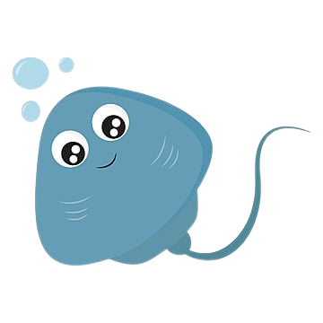

Hampir mirip dengan ikan hiu, di mana ikan pari juga adalah hewan yang memiliki kategori berkembang biak ovovivipar. Di mana embrio induk ikan pari akan tumbuh di dalam telur dan akan melahirkan saat waktunya sudah tepat. Embrio ini akan banyak mendapatkan nutrisi dari dalam telur yang semakin menambah perkembangannya hingga fase melahirkan
